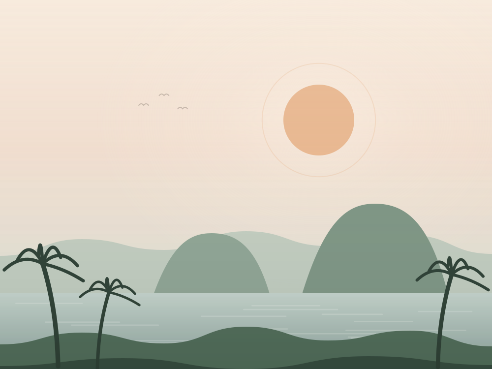

A origem
1992
Rio de Janeiro, Brasil
Antes de existir qualquer COP, foi preciso um acordo sobre o tamanho do problema. A Rio-92 reuniu delegações de mais de 170 países e cerca de cem chefes de Estado para discutir, pela primeira vez em escala mundial, como crescer sem destruir a natureza.
- Ponto-chave
- Nasceu ali a Convenção-Quadro das Nações Unidas sobre Mudança do Clima, o tratado que criou as COPs.
- Resultado
- Além da convenção do clima, saíram do encontro a Agenda 21 e a Convenção da Biodiversidade. A sociedade civil participou em peso, algo inédito até então.
